Two red-carpet products at E! / NBCUniversal. The Arrivals Gallery:
a real-time photo gallery on eonline.com that's still running on E!'s biggest events
today. E! Live 360: an Emmy-nominated 360 livestream platform inside
the E! News iOS and Android apps, sponsored by AT&T. I designed both during the
2018 award season.
RoleDigital Product Designer
CompanyNBCUniversal · E!
PlatformWeb · iOS · Android
Status● Shipped · 2018 · Emmy nom
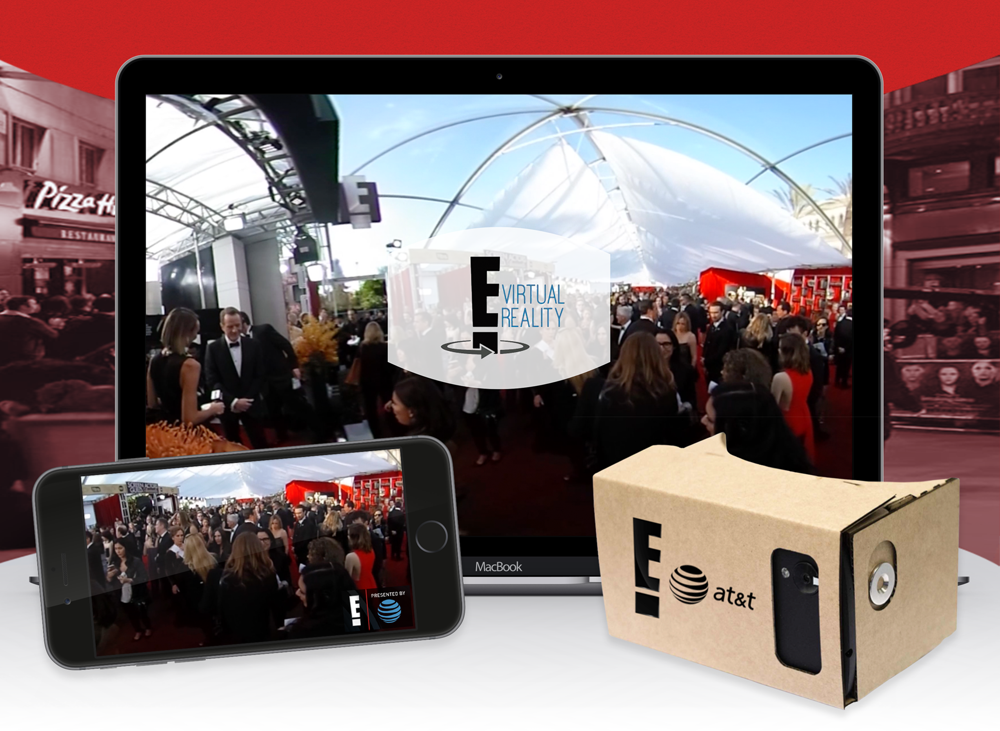
01 · Red carpet at E!
Two products. One audience.
At E!, red carpet coverage was its own product surface. Editorial readers came to
eonline.com expecting fresh photos seconds after each arrival. App users wanted in,
on the broadcast itself: cameras at the limousine drop, on the runway, in the studio.
I worked on both during the 2018 award season.
The Arrivals Gallery handled the editorial side: a real-time photo
gallery on eonline.com with seamless ad integration, designed for the kind of
minute-to-minute refreshing that happens during the Oscars or the Met Gala. The
E! Live 360 platform handled the immersive side: branded 360
livestreams with multiple cameras, delivered through the E! News mobile apps, with
AT&T as the sponsor. The 360 work earned an Interactive Emmy nomination.
02 · E! Live 360
Cameras on the carpet. In your hand.
E! Live 360 was a branded, multi-camera 360 livestream platform built into the front
door of the E! News iOS and Android apps. For the 2017 Live From The Red Carpet (LRC)
event, three feeds ran in parallel: a Hosted Channel from E! Studios, a 360 Fashion
Channel at the pose-and-turn, and an Arrivals Channel at the limousine drop. Custom
CTAs on desktop and mobile web drove users to download the app and engage with the
experience. The interactive layer was sponsored by AT&T and earned an Interactive
Emmy nomination.
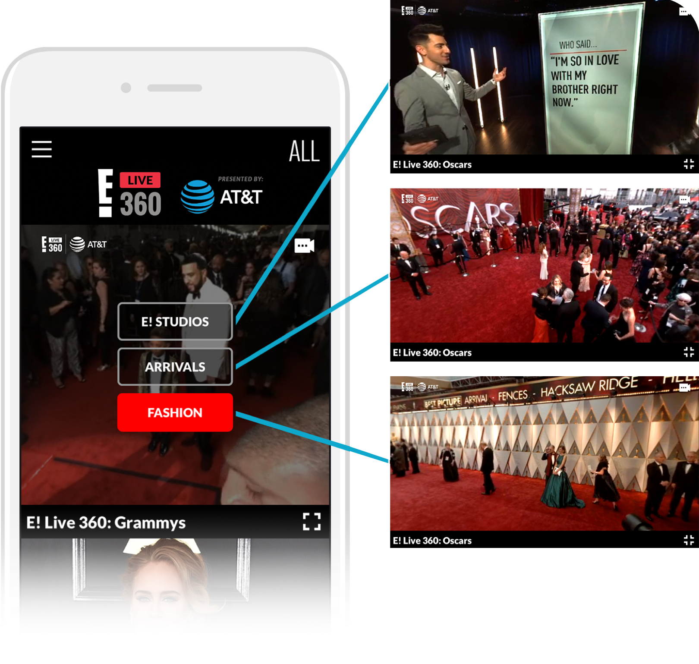
Three channels, one tap. The switcher surfaced the Hosted, Fashion, and Arrivals feeds inside the in-app player.
On the device
Rotating the phone opened the full landscape view, with a button overlay that surfaced
the camera options without blocking the live feed. Below, the same player running on
the iPhone during a live event.
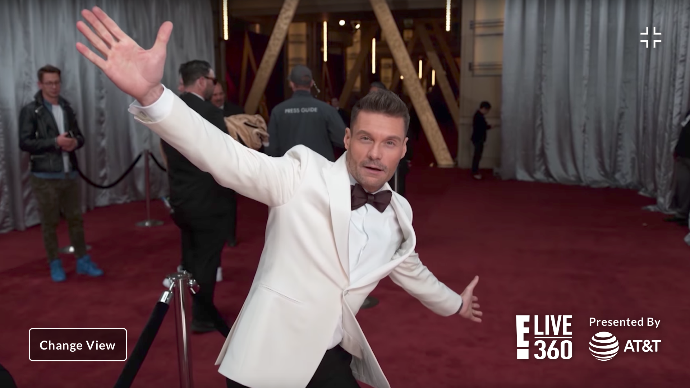
Landscape · clean view
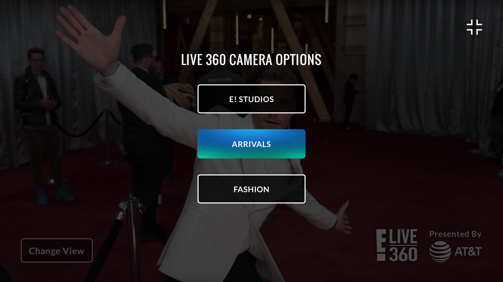
Landscape · camera overlay
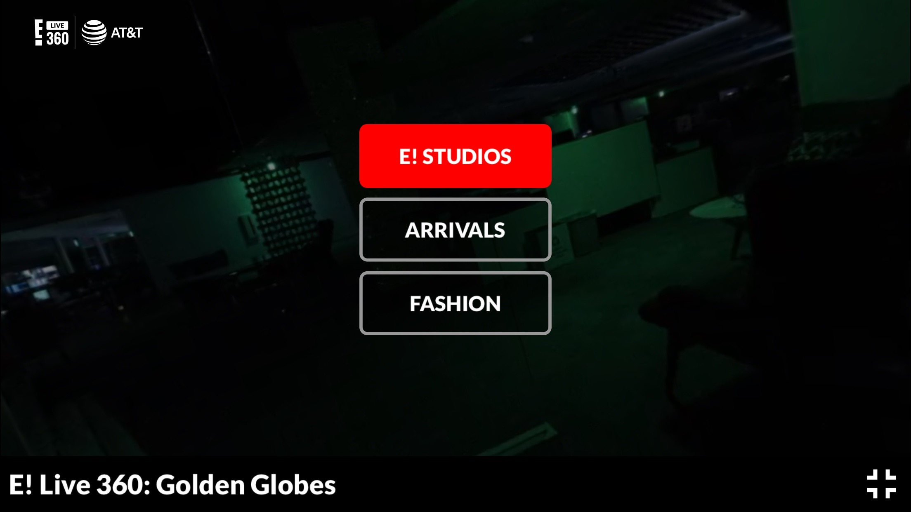
Landscape · live
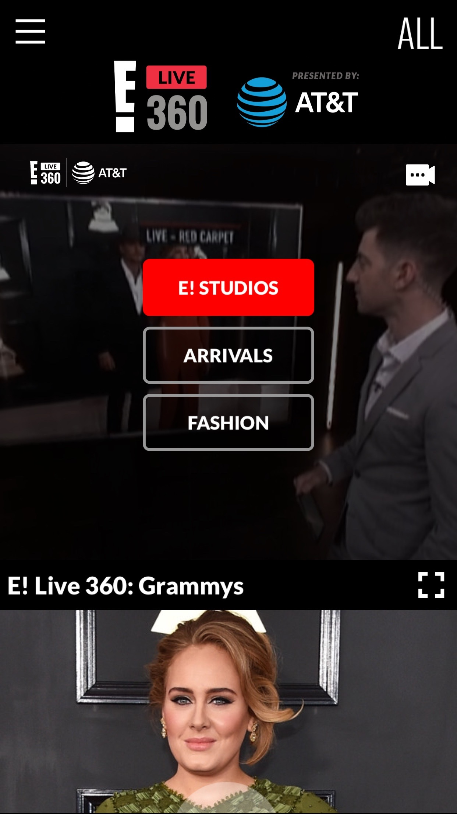
Portrait · live
03 · Arrivals Gallery
A photo gallery built for the moment.
Red carpet coverage on E! moves fast. Photos land at eonline.com seconds after each
arrival, and the audience is refreshing the page every minute or two waiting on the
next celebrity. The Arrivals Gallery had to handle that real-time cadence without
breaking the flow: new photos slide in as they're published, the layout stays stable,
and ad units slot in where they earn the placement instead of interrupting the read.
I built the gallery as a fully interactive prototype, not a stack of mockups. Every
state had real animation: how a new arrival enters, how the gallery scrolls, how an
ad unit appears. The prototype was the spec, and engineering shipped from it directly.
States · same gallery, different beats
The gallery had to do four things at once: present the existing photos cleanly,
announce new arrivals as they came in, host ad placements without dropping the
editorial feel, and keep all of it readable on a fast-scrolling page.
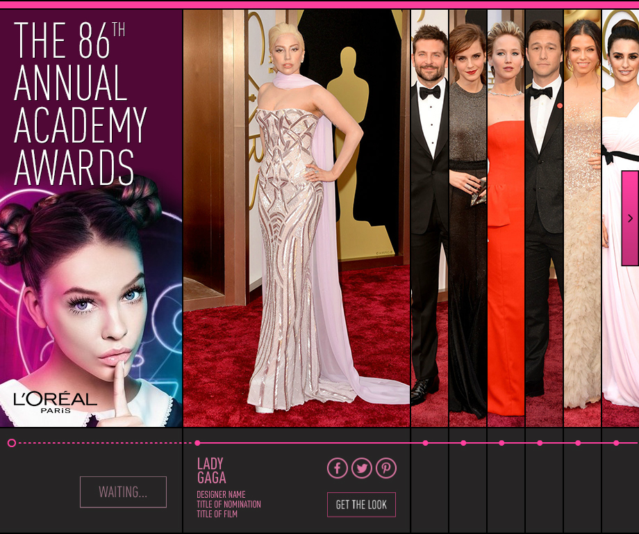
01 · Default state
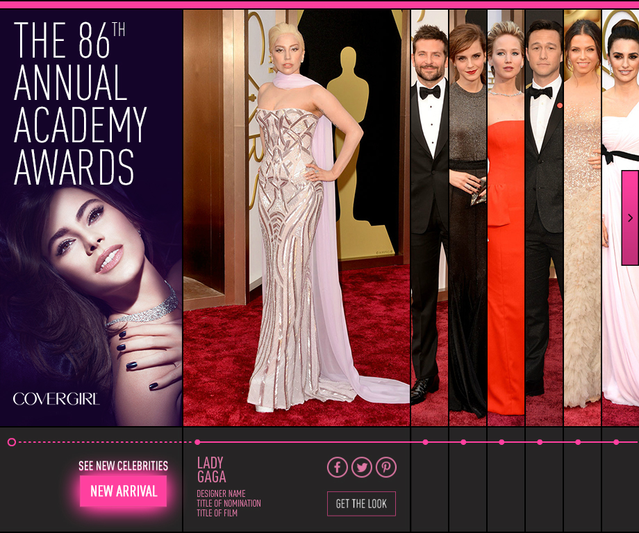
02 · New arrival
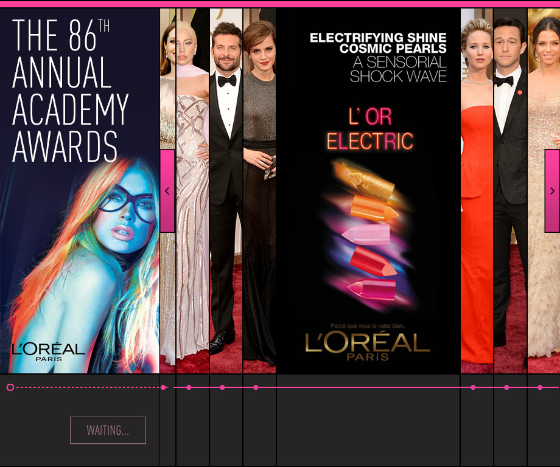
03 · Ad unit
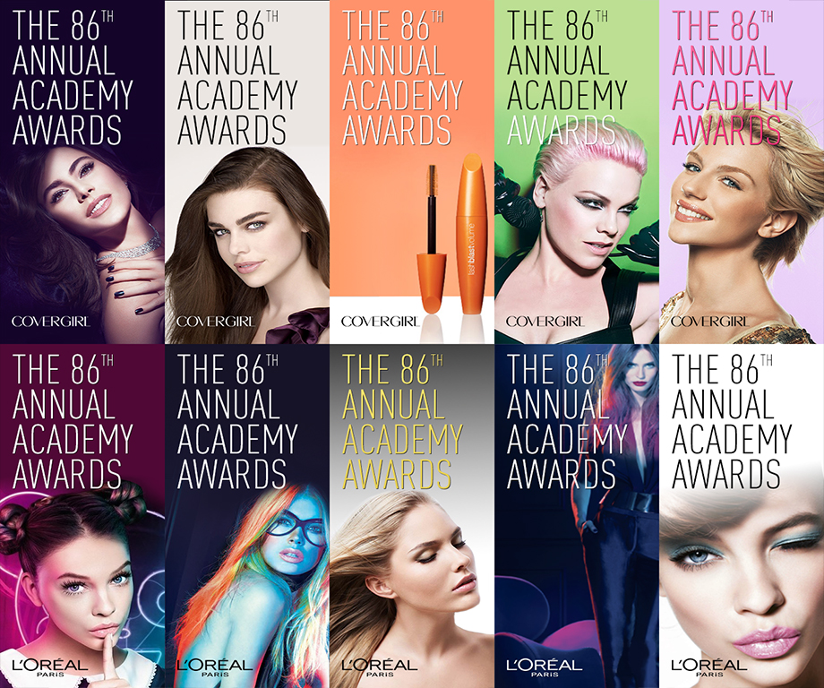
04 · Ad units across the layout
Mobile
The same patterns adapted to a single-column mobile read.
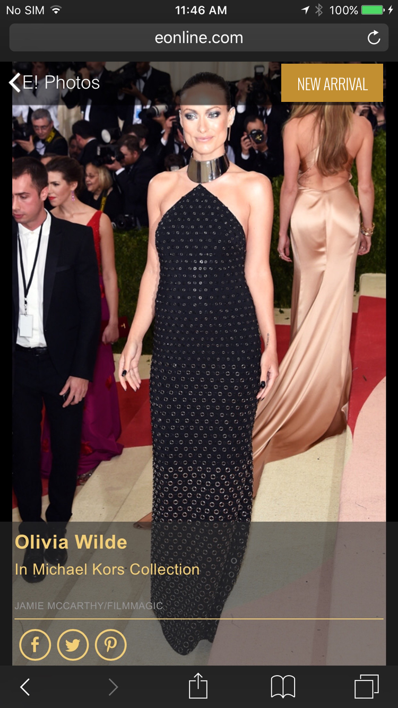
04 · Still shipping
Eight years in, still on the page.
The Arrivals Gallery is the long-runner. Launched on E! in 2018 and still running
today: the latest red carpet on eonline.com (the Met Gala, the Oscars, the Golden
Globes) uses the same pattern I designed. New photos, new celebrities, same gallery.
A creative app for kids: pick characters, set scenes, layer in music and animation,
share the result. I led design on Skit 2.0 across iOS, Android, and web.